- 관련게시물 : 특검, '계엄 해제표결 방해' 혐의 추경호 시장 징역 20년 구형
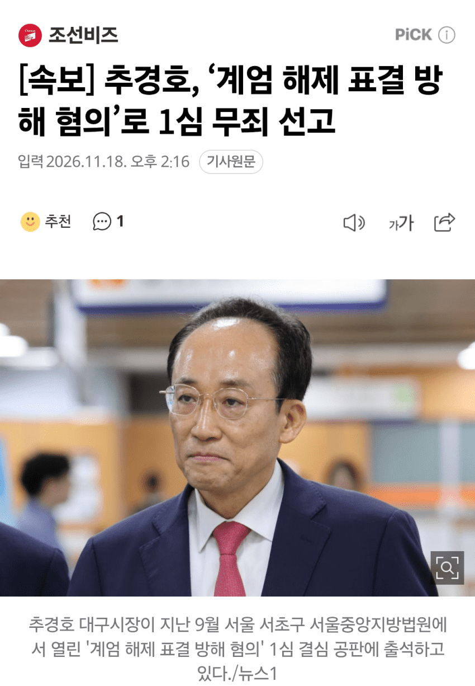
- 속보] '계엄 해제 표결 방해' 혐의 추경호 1심 무죄
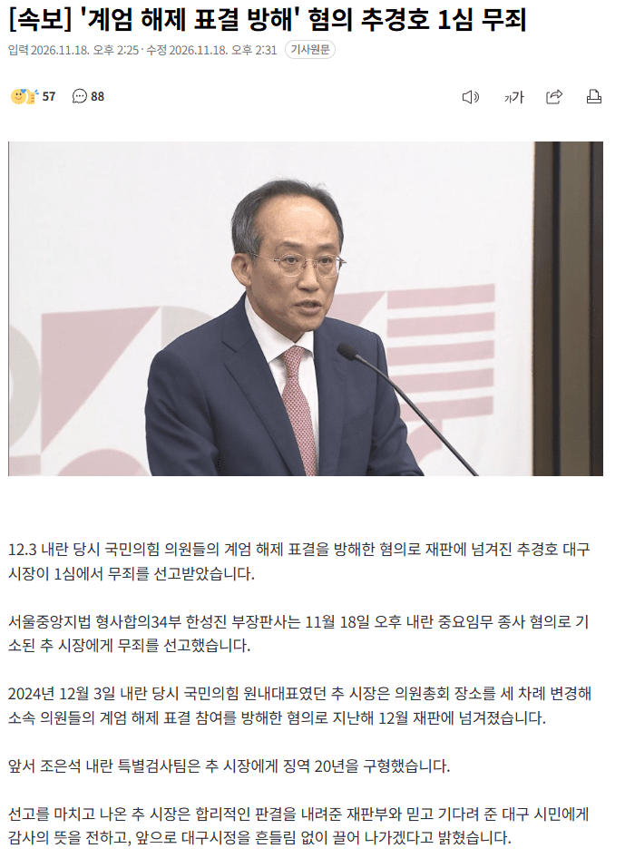
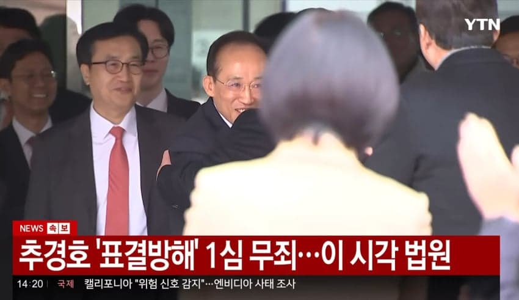
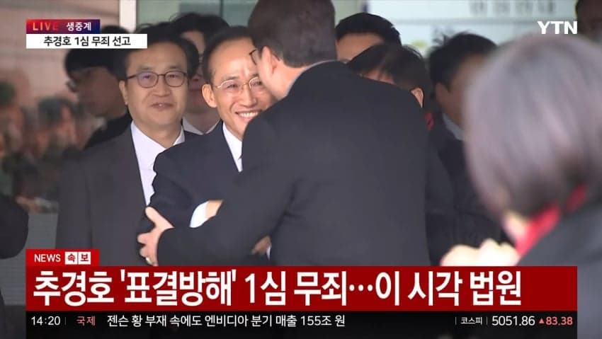
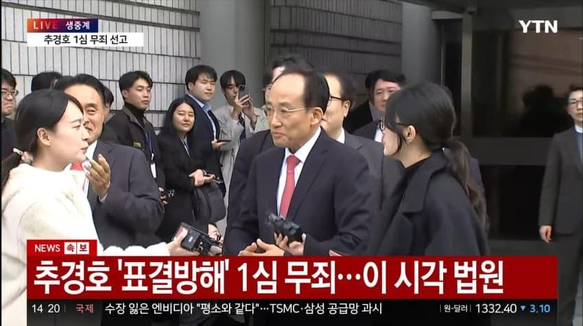
- dc official App
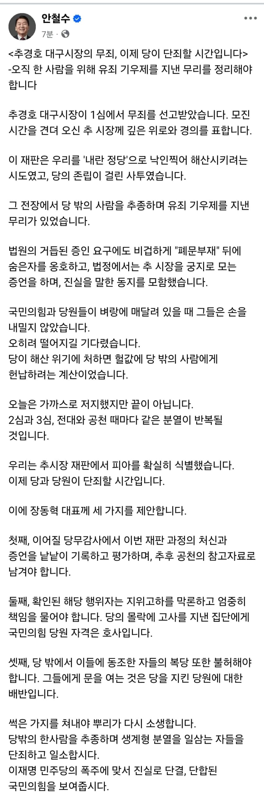
- 장예찬 페북 "추경호 무죄, 한동훈과 친한계 잘가라"
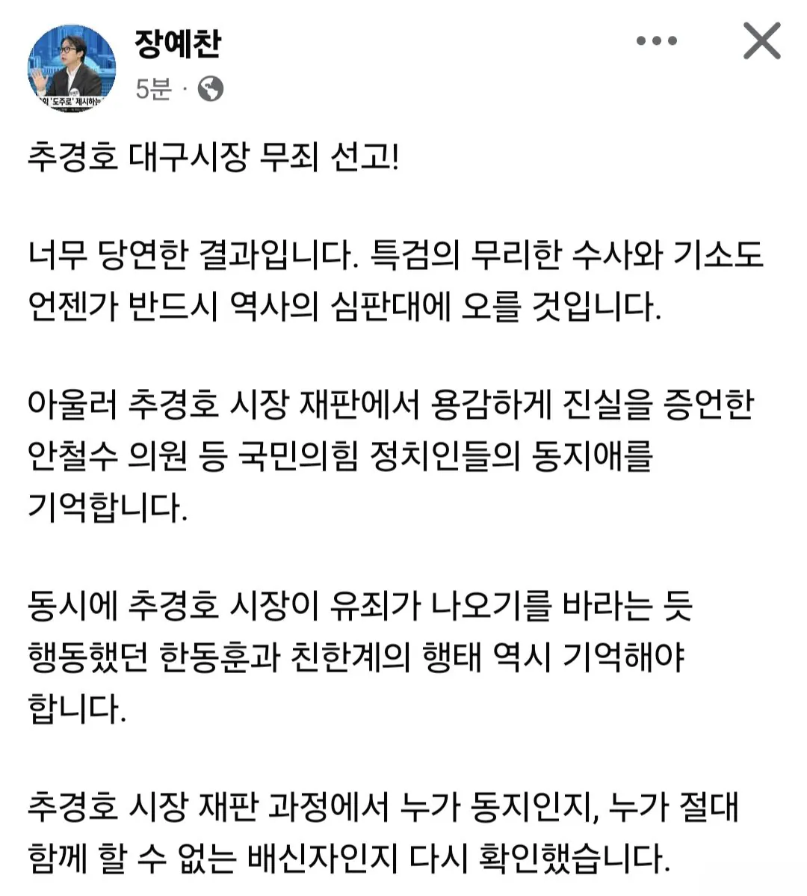
- dc official App
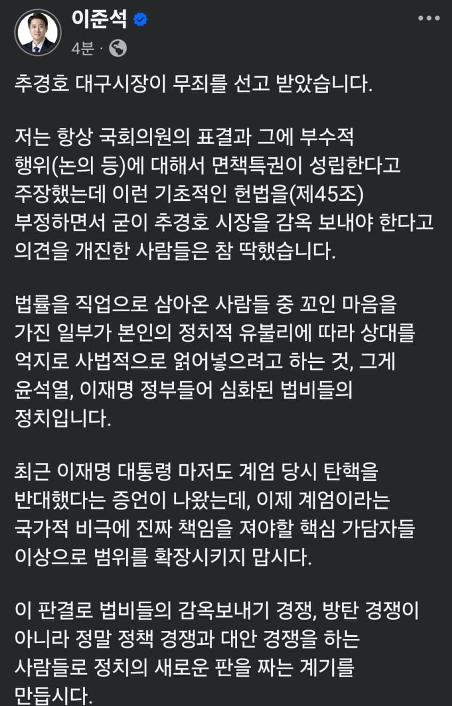
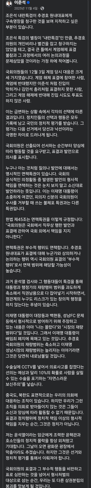
- 한동훈 페북업) 추경호 무죄판결 당연한 귀결•환영-장인상 위로에 감사
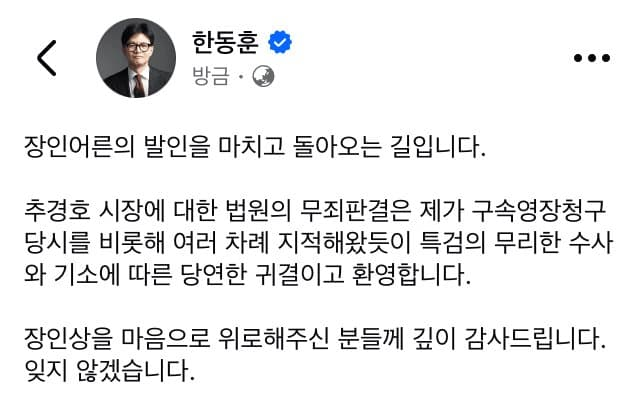
- [속보] 장동혁, "이런 게 조작 기소"…당내에도 내란몰이 세력있어

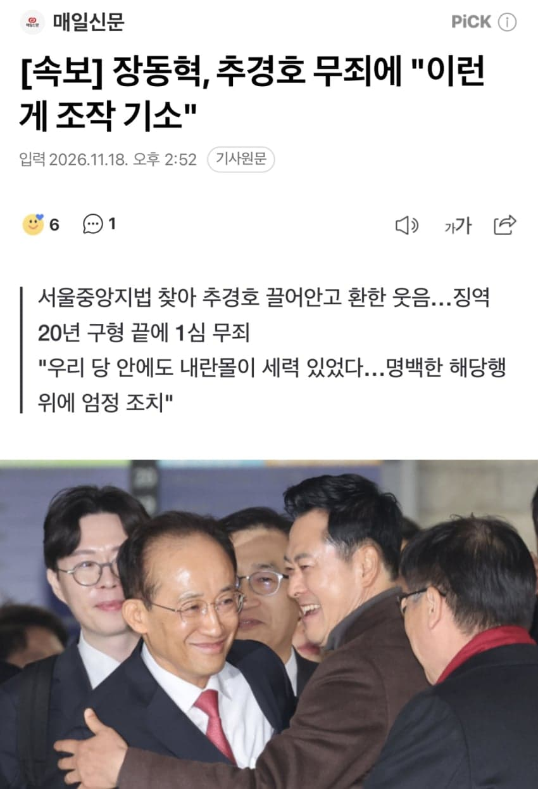
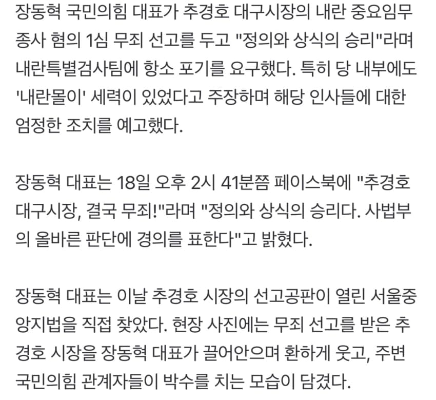
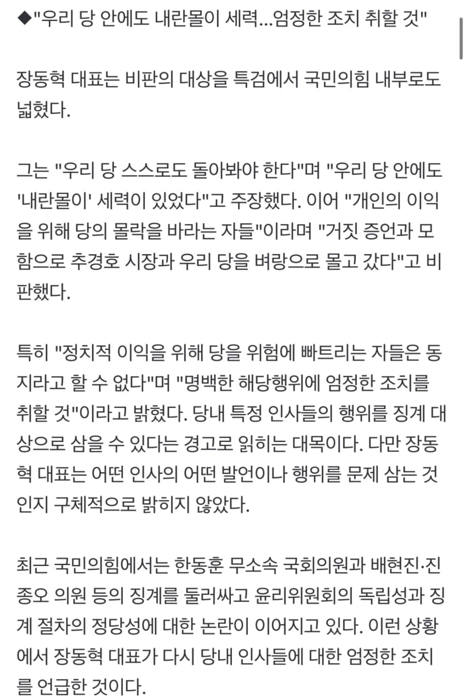
- dc official App
- 속보! 장대표, 추경호 내란몰이 선동자들 징계 예고!
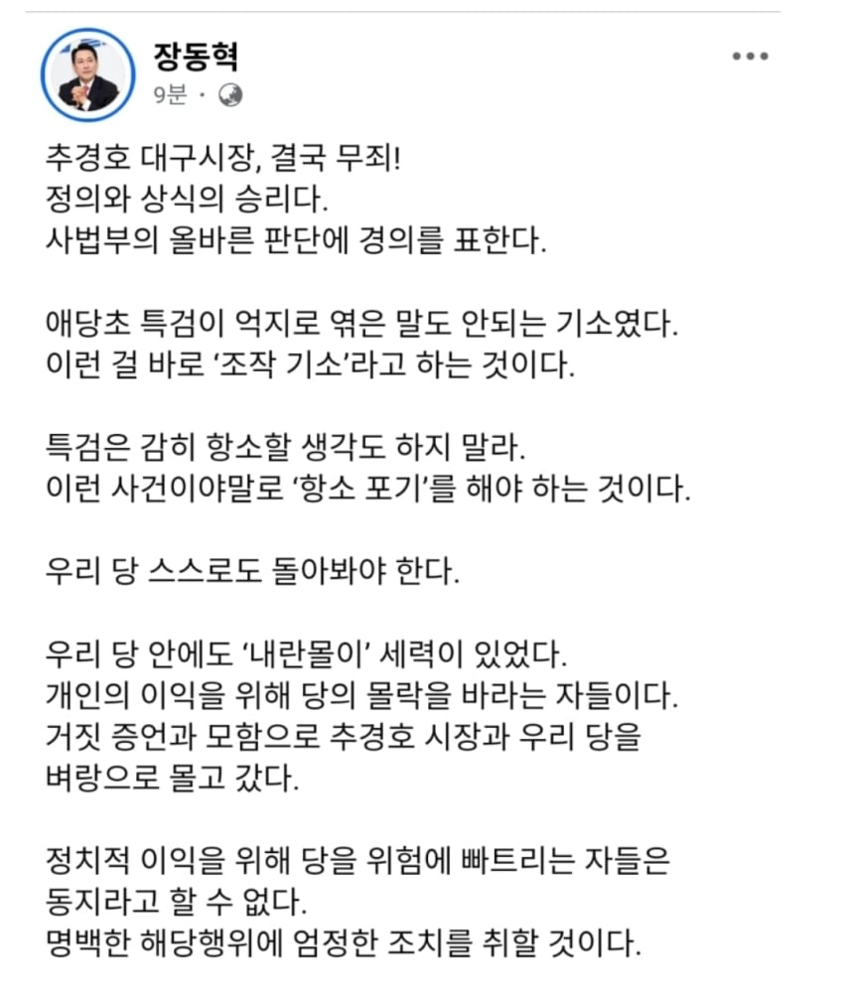
장대표 그계파들 때문에 개빡돈듯.
저렇게 딘호하고 매서운 워딩은 없었는데 ㄷㄷ
댓글
수집 당시 댓글 115개
빌애크먼 · 11.18 21:42:20
· ㅇㅇ · 11.18 22:02:01
· ㅇㅇ · 11.18 22:04:48
· ㅇㅇ · 11.18 22:13:37
· ㅇㅇ · 11.18 22:58:09
· ㅇㅇ · 11.18 22:59:29
· ㅇㅇ · 11.18 23:21:48
· ㅇㅇ · 11.18 23:27:43
· ㅇㅇ · 11.18 23:40:12
· ㅇㅇ · 11.18 23:48:30
· 선플유저 · 11.18 23:59:56
ㅇㅇ · 11.18 21:42:21
가발줌 망했노 ㅋ
ㅇㅇ · 11.18 21:42:38
ㅇㅇ · 11.18 21:42:58
ㅇㅇ · 11.18 21:43:11
· ㅇㅇ · 11.18 21:45:57
· ㅇㅇ · 11.18 21:46:00
· ㅇㅇ · 11.18 21:46:11
ㅇㅇ · 11.18 21:44:46
ㅇㅇ · 11.18 21:44:50
· ㅇㅇ · 11.18 21:45:30
· ㅇㅇ · 11.18 21:53:48
· ㅇㅇ · 11.18 21:55:11
· 윈터커밍 · 11.19 00:20:42
· ㅁㄴㅇㄹ · 11.19 10:20:00
ㅇㅇ · 11.18 21:45:09
대구
gogo고고 · 11.18 21:45:22
ㅇㅇ · 11.18 21:45:40
ㅇㅇ · 11.18 21:46:28
ㅇㅇ · 11.18 21:46:47
ㅇㅇ · 11.18 21:47:11
. · 11.18 21:47:27
ㅇㅇ · 11.18 21:49:00
안철수가
답이다
ㅇㅇ · 11.18 21:49:04
· ㅇㅇ · 11.18 22:33:47
· ㅇㅇ · 11.18 22:35:15
ㅇㅇ · 11.18 21:49:15
헌트 · 11.18 21:49:20
ㅇㅇ · 11.18 21:49:24
· ㅇㅇ · 11.18 21:50:07
· ㅇㅇ · 11.18 21:51:20
ㅇㅇ · 11.18 21:51:57
윤어게인
ㅇㅇ · 11.18 21:52:27
삼갤러 · 11.18 21:52:43
한가발
삼갤러 · 11.18 21:52:56
안농운
걸갤러 · 11.18 21:53:24
ㅇㅇ · 11.18 21:55:02
ㅇㅇ · 11.18 21:55:13
가발견
ㅇㅇ · 11.18 21:59:07
타이밍뒷통수한방 · 11.18 22:01:05
ㅋㅋㅋ · 11.18 22:01:43
· ㅇㅇ · 11.18 23:00:56
ㅇㅇ · 11.18 22:02:30
ㅇㅇ · 11.18 22:07:02
· ㅇㅇ · 11.18 23:01:33
· ㅇㅇ · 11.18 23:37:42
· ㅇㅇ · 11.18 23:40:44
털보 · 11.18 22:08:09
ㅇㅇ · 11.18 22:09:09
· ㅇㅇ · 11.18 22:12:39
추가경쿠 호호 (쌀숭이)
ㅇㅇ · 11.18 22:09:38
· ㅇㅇ · 11.19 01:53:19
ㅇㅇ · 11.18 22:13:45
· ㅇㅇ · 11.18 22:46:06
· ㅇㅇ · 11.18 23:04:28
· ㅇㅇ · 11.18 23:14:43
· ㅇㅇ · 11.18 23:18:26
· ㅇㅇ · 11.18 23:22:30
주소킹 · 11.18 22:17:19
ㅇㅇ · 11.18 22:25:51
ㅇㅇ · 11.18 22:30:03
ㅇㅇ · 11.18 22:32:14
ㅇㅇ · 11.18 22:32:42
· ㅇㅇ · 11.18 23:10:48
ㅇㅇ · 11.18 22:33:00
ds · 11.18 22:51:57
시끄러 · 11.18 23:27:09
야룽이 · 11.18 23:27:10
ㅇㅇ · 11.18 23:39:06
ㅇㅇ · 11.18 23:51:44
환란 전 교회 휴거 · 11.19 00:00:11
ㅇㅇ · 11.19 00:09:47
ㅇㅇ · 11.19 00:10:41
ㅇㅇ · 11.19 00:41:52
ㅇㅇ · 11.19 00:57:37
ㅇㅇ · 11.19 02:07:03
ㅇㅇ · 11.19 02:07:08
ㅇㅇ · 11.19 02:20:22
· ㅇㅇ · 11.19 06:48:56
· ㅇㅇ · 11.19 09:26:27
· ㅇㅇ · 11.19 10:32:17
· ㅇㅇ · 11.19 10:32:28
ㅇㅇ · 11.19 04:11:25
ㅇㅇ · 11.19 07:04:44
ㅇㅇ · 11.19 08:21:51
ㅇㅇ · 11.19 09:23:41
타이밍뒷통수한방 · 11.19 09:48:33
ㅇㅇ · 11.19 11:39:56
ㅇㅇ · 11.19 11:40:34
ㅇㅇ · 11.19 11:42:57
진모 · 11.18 14:19:28
빋갤러1 · 11.18 14:19:42
30% · 11.18 14:20:06
쏘핸썸홀란드 · 11.18 14:24:31
ㅇㅇ · 11.18 14:25:28
ㅇㅇ · 11.18 14:25:38
ㅇㅇ · 11.18 14:29:09
ㅇㅇ · 11.18 14:41:13
ㅇㅇ · 11.18 14:46:35
ㅇㅇ · 11.18 21:40:52
ㅇㅇ · 11.18 21:41:03
봇치쟝 · 11.18 21:41:04
ㅇㅇ · 11.18 21:41:53
ㅇㅇ · 11.18 21:42:04
ㅇㅇ · 11.18 21:42:19